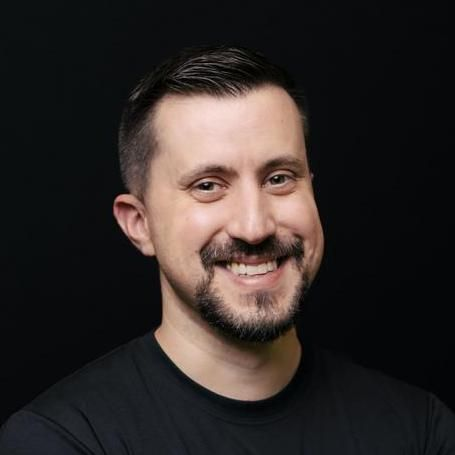

Fernando Bevilacqua
Staff Software Engineer
Technical Leadership · Distributed Systems · Developer Productivity
Profile
Software Engineer and technical leader with 20+ years of experience building software products, distributed systems, developer tooling, and AI-enabled solutions. Currently Head of Software/CTO, combining hands-on engineering with architecture, technical leadership, and product delivery. PhD in Informatics with experience spanning industry, research, open source, and entrepreneurship. Strong track record of improving engineering productivity, designing developer-facing systems, and taking products from conception to production.
Experience
Head of Software / CTO at Optidata
- Led architecture and development of an enterprise SaaS platform spanning file storage, office collaboration, chat, video, social, calendar, and email; it became the company's second-highest-grossing offering.
- Remained hands-on across PHP/Laravel, Go, PostgreSQL, Redis, Ceph, Kubernetes, and Docker.
- Introduced internal CLI tooling, AI-assisted code review, documentation, reusable AI-agent skills/prompts, and engineering practices to improve developer productivity.
- Increased team delivery by 32% despite a 45% reduction in team size.
- Built tooling and AI-assisted workflows associated with reported improvements of +105% tasks/month and +213% individual contributions.
Technology Consultant at Amplimed
- Advised engineering teams on architecture, technical-debt reduction, framework selection, and development practices across production systems.
- Prioritized improvements to simplify development and long-term maintenance across PHP, Laravel, MySQL, MongoDB, Redis, and AWS.
Software Engineer at Animati Computação Aplicada
- Developed and maintained the flagship Radiology Information System (RIS), including custom functionality for high-stakes medical workflows.
- Contributed research used in the web-based DICOM viewer; worked with Java, Spring Boot, Hibernate, Docker, and PostgreSQL.
Software Engineer / Architect at Iara Health
- Designed and implemented APIs, SDKs, and processing pipelines for healthcare customers integrating Iara's speech-recognition technology.
- Built the JavaScript SDK and developer documentation for external integrations.
- Worked across JavaScript/TypeScript, Java, Python, Google Cloud, speech-to-text, and machine-learning systems.
Adjunct Senior Lecturer at Federal University of Fronteira Sul
- Taught Computer Science, including algorithms, software development, computer graphics, game development, web development, and object-oriented programming.
- Conducted research in Human-Computer Interaction, computer vision, and AI.